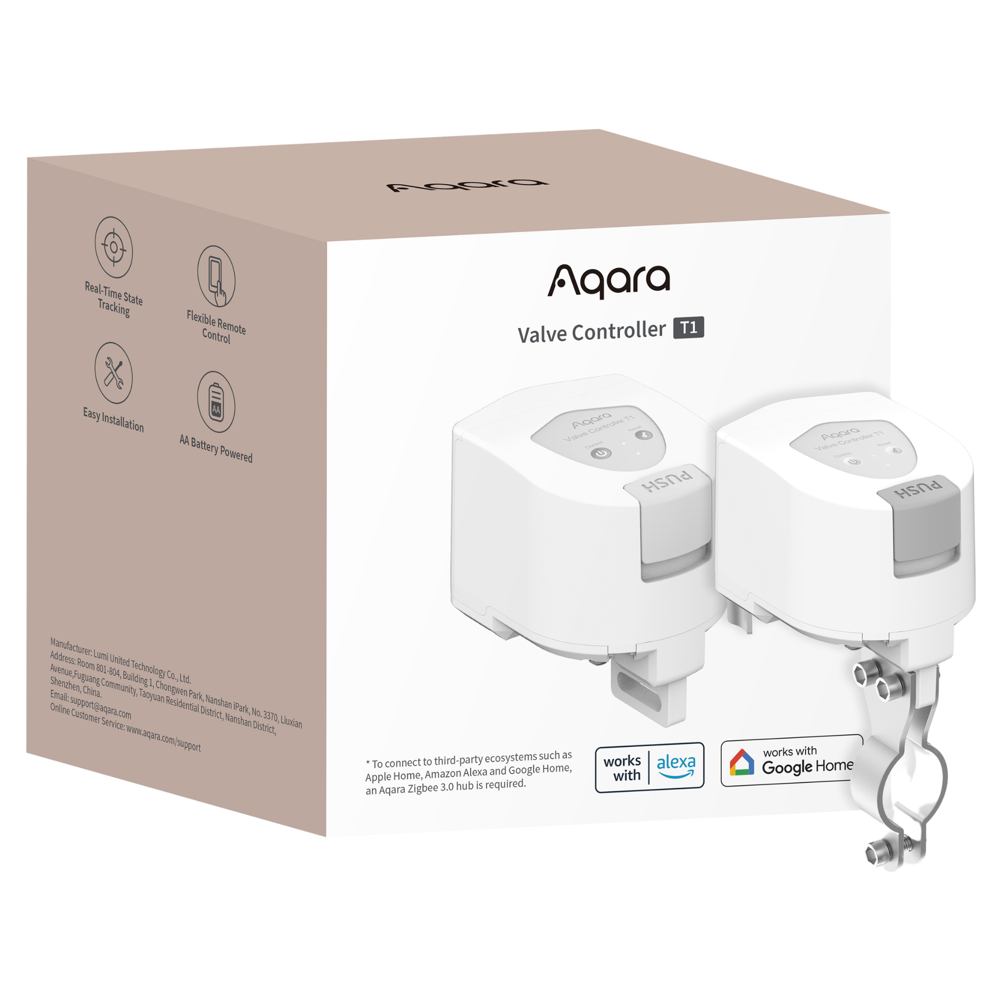
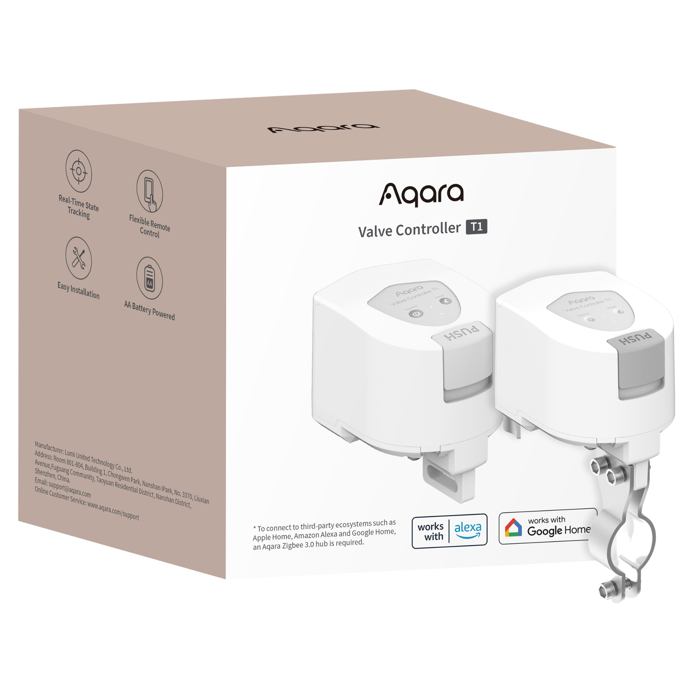

Valve Controller T1
- Protect your home with the Aqara Valve Controller T1 – smart Zigbee control, easy install, app & auto shut-off when leaks are detected. No plumbing needed.
Real-Time State Tracking |
Flexible Remote Control |
Easy Installation |
Long Battery Life and Durability |
Zigbee with Matter over Bridge Support |

 

Product Info
Description
The Aqara Valve Controller T1 brings intelligent, reliable water control into your home with minimal fuss. Designed to retrofit easily onto existing indoor valves, it installs in minutes without the need for plumbing or special tools. Once connected to an Aqara Zigbee 3.0 Hub (required), it becomes part of a powerful leak protection system—automatically shutting off your water supply within seconds when paired with Aqara Water Leak Sensors. This rapid response helps prevent damage and offers peace of mind whether you're home or away.
Control is simple and flexible, with manual operation, app control via the Aqara Home app, scheduling, and automations supported. Thanks to Matter over Bridge compatibility, it works seamlessly with smart ecosystems including Apple HomeKit, Google Assistant, Amazon Alexa, and more. Powered by four AA batteries, the T1 operates wire-free and can last up to two years on a single set, thanks to its energy-efficient design.
Compact, durable, and easy to integrate, the Aqara Valve Controller T1 is a smart, hassle-free way to protect your home from water damage and gain greater control over your plumbing—making it an ideal safety upgrade for any smart home.
Key Features
- Always-On Monitoring with Automatic Shut-Off: The Aqara Valve Controller T1 helps protect your home by automatically shutting off the water supply when a leak is detected. When paired with an Aqara Zigbee Hub and Water Leak Sensors, it creates a smart safety system that reacts within 5 to 20 seconds*, helping to prevent costly damage and offering peace of mind whether you’re home or away.
- Flexible Smart Control Options: Enjoy effortless control with multiple options including manual operation, app-based control via the Aqara Home app, and scheduled timers. The T1 offers a convenient and user-friendly way to manage your water system with precision.
- Quick and Easy Installation: The Valve Controller T1 retrofits onto your existing water valves without the need for plumbing or specialist tools. Its simple, tool-free setup makes it easy for any homeowner to install and start using straight away.
- Compatible with Most Household Valves: Designed for versatility, the T1 supports common valve types including lever and butterfly handles, and fits pipe sizes DN15, DN20, and DN25. Its wide compatibility makes it ideal for most domestic water systems.
- Smart Home Integration: Smart features are enabled via an Aqara Zigbee Hub**, with Matter over Bridge support*** allowing you to connect seamlessly to platforms such as Alexa, Google Assistant, Apple HomeKit, and more. This ensures smooth integration into your existing smart home setup.
- Long Battery Life and Durability: Powered by four AA batteries, the T1 delivers reliable performance for up to two years**** on a single set. Its energy-efficient design means no wiring and minimal maintenance are required.
Note:
* The greater the valve torque, the longer the shut-off time; the maximum working time is 20 seconds. An alarm will be triggered if exceeded.
** Aqara Zigbee Hub" refers to all Aqara hubs available at launch, excluding G2H Pro.
*** Matter over Bridge requires a Matter controller compatible with your smart home ecosystem.
**** Battery life is based on using 4 fully charged 2900mAh AA batteries and one open/close cycle per day.
The Valve Controller T1 motor is not waterproof. For outdoor areas such as patios, lawns, and gardens, it must be installed on an indoor valve to control the external water supply safely.
Specifications
| Model | VC-X01D |
| Wireless Protocols | Zigbee 3.0 |
| Product size | 93 x 72 x 84 mm (3.66 x 2.83 x 3.31 inches) |
| Power Supply | 4 xAA |
| Valve Pressure | 1.6 MPa |
| Torque | ≤ 60 kg-cm |
| Compatible Pipe Sizes | DN15, DN20, DN25 |
| Compatible Handle Types | Lever handle |
| Operating Temperature | -10 °C ~ 40 °C (14 °F ~ 104 °F) |
| Operating Humidity | 0 ~ 95% RH, no condensation |
| What's in the Box | Valve Controller T1 x1, User Manual x1, Accessory Kit x1, AA x4 |
Automations and Complementary Products
Click a product image to go to its page details
Scene: Water Leak Protection:
Whether during daily routines or when away on holiday, this automation safeguards your home by preventing water damage and avoiding costly repairs.
| Required Automation Products: | Valve Controller T1 |
 Hub M3 |
 Water Leak Sensor T1 |
Automation Setup
IF (Condition) – IF a water leak is detected in the kitchen or bathroom // THEN (Action) – Turn off the main water valve
Scene: Garden Sprinkler Automation:
This automation removes the need for manual watering, ensuring your garden receives consistent care, promoting healthy plants, and saving you time and effort.
| Required Automation Products: | Valve Controller T1 |
Hub M3 |
Automation Setup
IF (Condition) – IF the time is 6:00 am every day // THEN (Action) – Turn on the valve controlling the garden sprinkler system
Scene: Integrating Automation into Everyday Life
Ideal for when you’re travelling or out, this automation switches your water supply off and on automatically, offering convenience and peace of mind.
| Required Automation Products: | Valve Controller T1 |
Hub M3 |
 Presence Sensor FP2 |
Automation Setup
IF (Condition) - IF absence is detected for one day or more // THEN (Action) – Turn off the house’s main valve
Scene: A Thermostat Alternative for Homes Without Thermostatic Radiator Valves:
If your hydronic radiator valve is compatible with the Valve Controller T1, you can use it as a smart thermostat to save energy and enhance comfort effortlessly.
| Required Automation Products: | Valve Controller T1 |
Hub M3 |
Presence Sensor FP2 |
Automation Setup
IF (Condition) – IF presence detectors sense absence for more than five minutes // THEN (Action) – Close the radiator valve
Product Support Documents
- Step by step installation instruction video:
Installation Video (00:05:43) - Product User Manual:
User Manual (PDF) - Product FAQs:
Frequently Asked Questions (PDF)